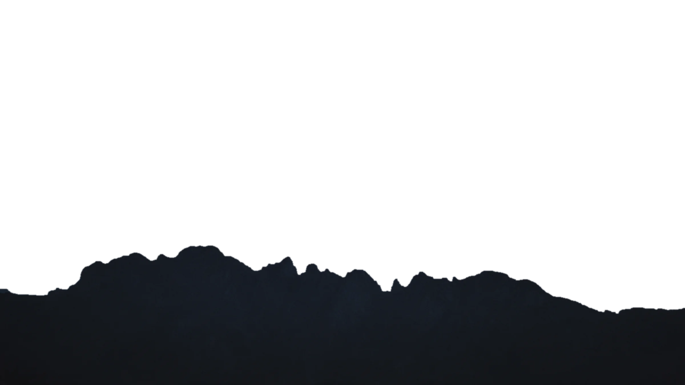

Informatik und Software
Als Informatikingenieur habe ich über zwanzig Jahre lang als Entwickler an einem grossen IT-Projekt gearbeitet. Ich übersetze, post-editiere und prüfe technische Inhalte für grosse IT-Unternehmen.



Unterwegs geht nichts verloren. Philippe Noth, freiberuflicher Übersetzer in Guttet im Wallis: aus dem Deutschen und Englischen ins Französische, für die Schweiz oder für Frankreich.
Deutsch Französisch
Über den Pass führt ein alter Saumweg.Un ancien chemin muletier franchit le col. Wer ihn geht, wechselt nicht nur das Tal, sondern auch die Sprache.Qui l’emprunte ne change pas seulement de vallée, mais aussi de langue. Ein Text macht dieselbe Reise.Un texte fait le même voyage. Unterwegs darf nichts verloren gehen: kein Sinn, kein Ton, kein Detail.En chemin, rien ne doit se perdre : ni le sens, ni le ton, ni le moindre détail.
Ich arbeite für Direktkunden und für Übersetzungsagenturen, für einzelne Aufträge oder langfristig.
Aus dem Deutschen und Englischen ins Französische: Websites, Software, Magazine, Dokumentationen, Unternehmenskommunikation. Das Ziel bleibt dasselbe: ein Text, der sich liest, als wäre er auf Französisch geschrieben worden.
Zweisprachige Revision: Ich vergleiche die Übersetzung mit dem Original und prüfe Sinn, Terminologie und Einheitlichkeit. Einsprachiges Korrektorat: Ich korrigiere Rechtschreibung, Grammatik und Typografie des französischen Textes.
Ein maschinell vorübersetzter Text bleibt ein Entwurf. Ich überarbeite ihn Segment für Segment, bis er stimmt, einheitlich ist und sich angenehm liest.
Wenn Sie in der Schweiz sind, komme ich vorbei und helfe bei der Verständigung zwischen französisch-, deutsch- und italienischsprachigen Personen. Ich verstehe und spreche diese drei Landessprachen sowie Englisch.
Themen, die ich von innen kenne, weil ich darin gearbeitet oder darüber geschrieben habe.
Als Informatikingenieur habe ich über zwanzig Jahre lang als Entwickler an einem grossen IT-Projekt gearbeitet. Ich übersetze, post-editiere und prüfe technische Inhalte für grosse IT-Unternehmen.

Mit Saas-Fee Tourismus habe ich am Destinationsmagazin 4545 gearbeitet.

Tägliche Übersetzungen aus dem Deutschen ins Französische für einen führenden europäischen Detailhändler. Auch andere Händler vertrauen mir ihre Texte an.

Als Autor von zwei Wanderführern, erschienen bei den Éditions Slatkine, kenne ich den Wortschatz von Gelände, Karte und Weg.
Für Translators without Borders habe ich ehrenamtlich Dokumente über die Herausforderungen des Fairtrade-Kaffees übersetzt.
Seit 2018 vertraut mir eine der grössten Übersetzungsagenturen der Welt IT-Projekte an.
Derselbe deutsche Text ergibt in Lausanne nicht dieselbe Übersetzung wie in Lyon. Wählen Sie Ihre Leserschaft.

Ich heisse Philippe Noth. Als Informatikingenieur mit vier Sprachen habe ich über zwanzig Jahre lang als Entwickler an einem grossen IT-Projekt gearbeitet. Diese Erfahrung nutze ich heute in einer zweiten Laufbahn: als freiberuflicher Übersetzer und Revisor unter dem Namen Valais Traductions.
Ausserdem habe ich zwei Wanderführer geschrieben, die auf Französisch bei den Éditions Slatkine in Genf erschienen sind. Sie beschreiben einsame Routen in den Schweizer Alpen, in einer Sprache, die sich gern lesen lässt.
Und schliesslich habe ich lange die Web-Stilblüten betrieben, eine Sammlung unfreiwillig komischer Übersetzungen aus dem Internet. Hier leben sie weiter: zu den Stilblüten.
Meinen Lebenslauf sende ich Ihnen gern auf Anfrage.

Randonnées pour grizzlys et autres animaux solitaires Walliser Alpen, 2013, auf Französisch

Randonnées pour grizzlys et autres animaux solitaires Waadtländer, Freiburger und Berner Alpen und Voralpen, 2017, auf Französisch
Suchen Sie einen flexiblen und sorgfältigen Sprachprofi, oder möchten Sie sicherstellen, dass eine bestehende Übersetzung keine Fehler und Unstimmigkeiten enthält? Schreiben Sie mir, ich nenne Ihnen gern meine Tarife und meine Verfügbarkeit.
Valais Traductions, Philippe Noth